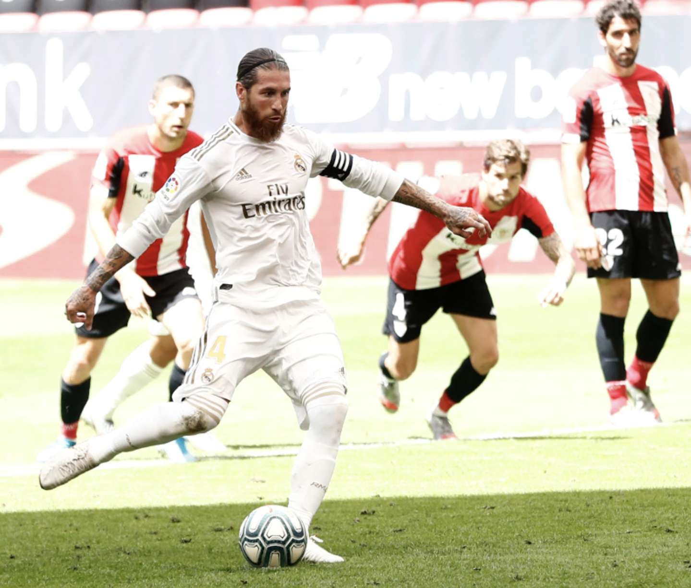

source: Twitter/@realmadrid
Thursday night, in Madrid’s match against Getafe, they went into the 70th minute tied goalless and left with a 1-0 win due to a penalty. On Sunday, the same thing happened. This is their third penalty in the seven matches they have played since the restart and their second game-winning penalty. It is fair to say that Madrid is benefiting from these penalty decisions, as two of the calls were very soft (against Real Sociedad and Athletic Club) and could have easily not been called. What makes the whole situation worse is that what earned Real Madrid their penalty today (Dani Garcia stepping on Marcelo’s foot) happened at the other end only a few moments later (Sergio Ramos stepped on Raul Garcia’s foot) and it wasn’t called. There are a few reasons why Ramos’ tackle wasn’t called, as Garcia was in an offside position, and the ball wasn’t near them, but it still doesn’t sit well that Madrid so often benefits from the referees’ decisions (or lack thereof).
On a different note, Sergio Ramos now has hit a tally of 10 goals this season, the most that any defender has scored in La Liga in a single season in the 21st century. He has also scored the last 20 penalties that he has taken one of the best streaks in the world.
5. Athletic Need to Look Elsewhere for European Football
Athletic Club now sit in 8th place in La Liga, 2 points behind their rivals Real Sociedad, who have a game in hand. They have a lot of ground to make up if they want to be playing in the Europa League next season, and it’s not looking good for the Basque side. However, if they beat Sociedad in the final of the Copa del Rey, they will secure La Liga’s final Europa League spot. The only issue is, the Copa del Rey final has been delayed indefinitely, and, as there is no prospective date to play the final, it doesn’t look like it will be played before the next season starts. This presents a problem for both Sociedad and Athletic Club, as both are seeking a Europa League campaign next season, they need to set a date to play the final soon, or they will forfeit the Copa del Rey’s Europa League spot. If this happens, the 7th place team in La Liga will receive a Europa League spot, which at this time, is Real Sociedad. Athletic Club will need to win the rest of their matches (against Sevilla, Levante, Leganes, and Granada) if they want any shot at a Europa League berth.